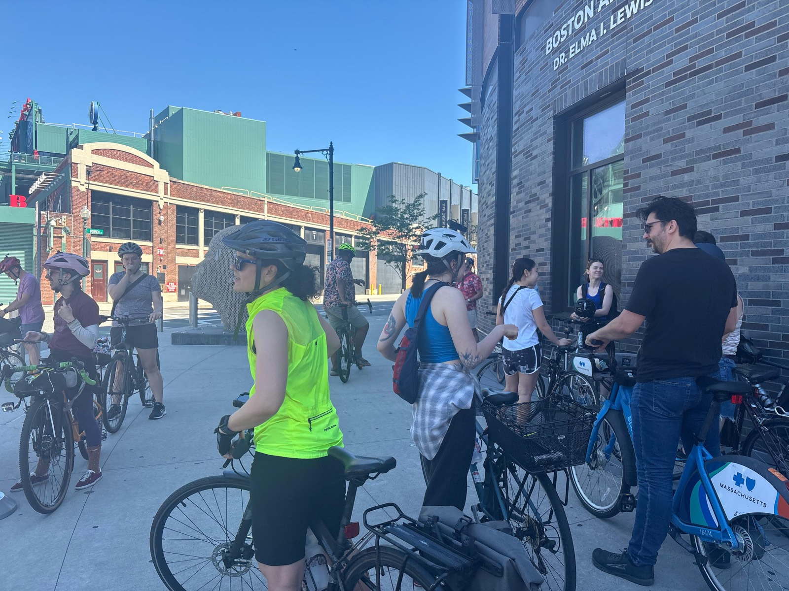
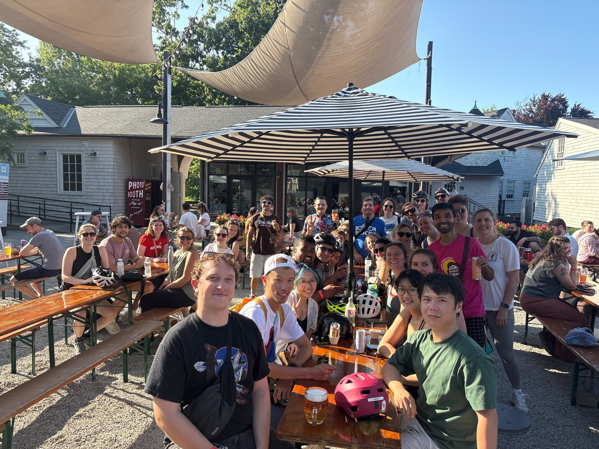
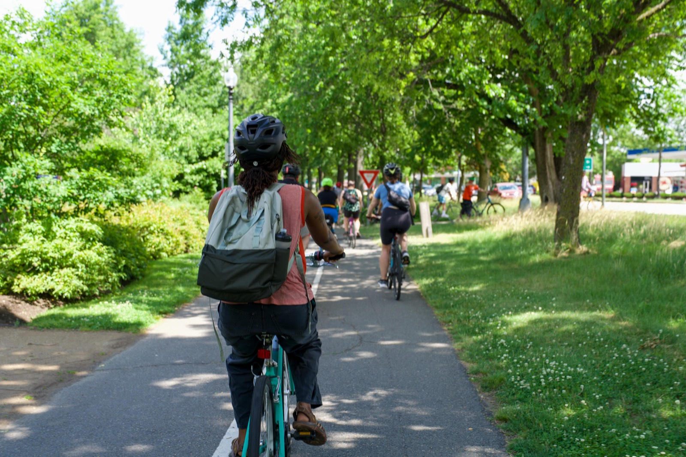
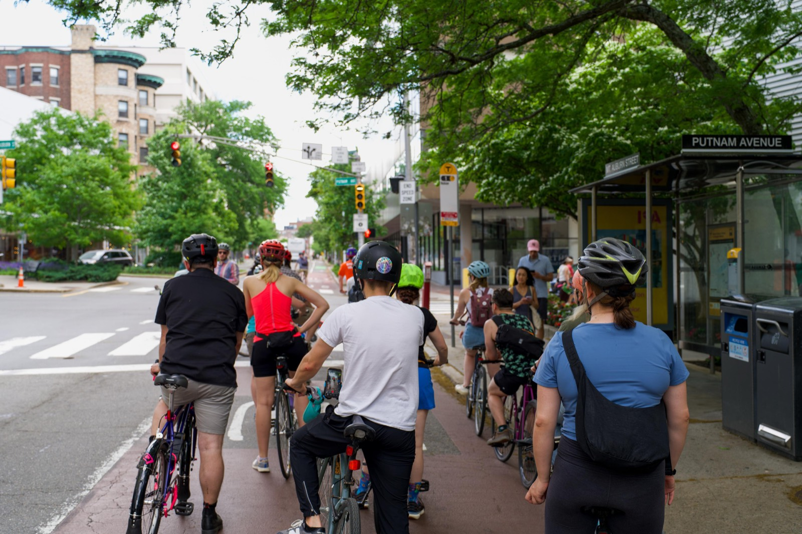
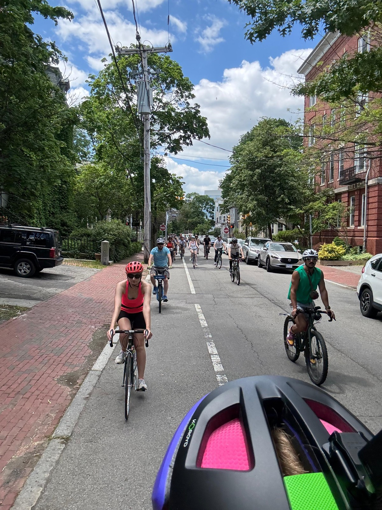

From the rides
Rollouts, regroup points, and the coffee at the end. Photos from group rides land here — check Instagram for the latest in the meantime.





Ride photos — one café at a time.
Rollouts, regroup points, and the coffee at the end. Photos from group rides land here — check Instagram for the latest in the meantime.




